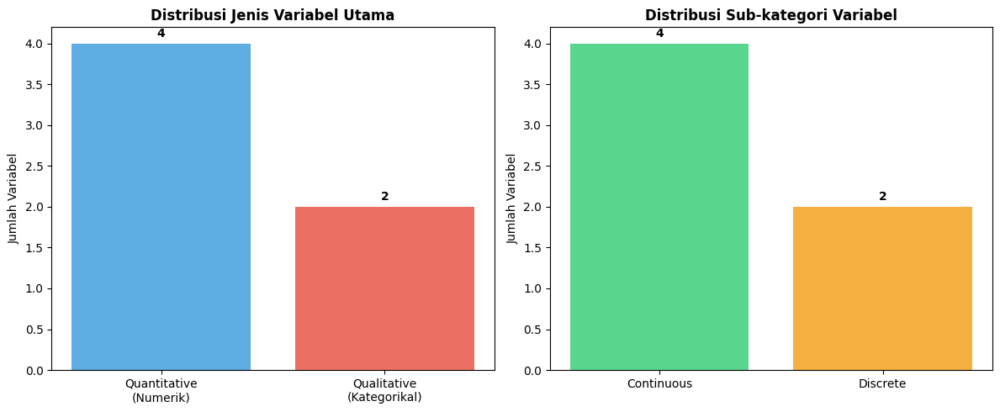
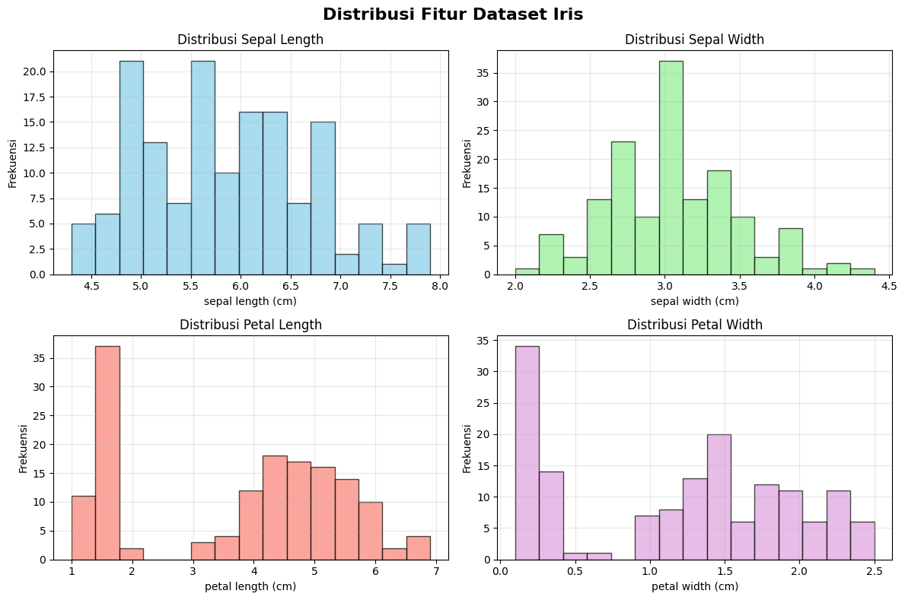
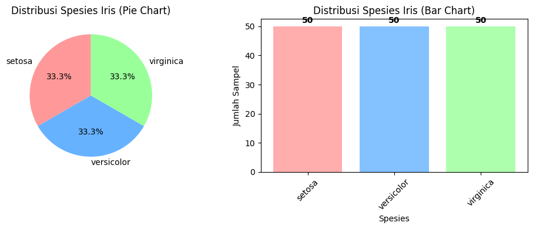
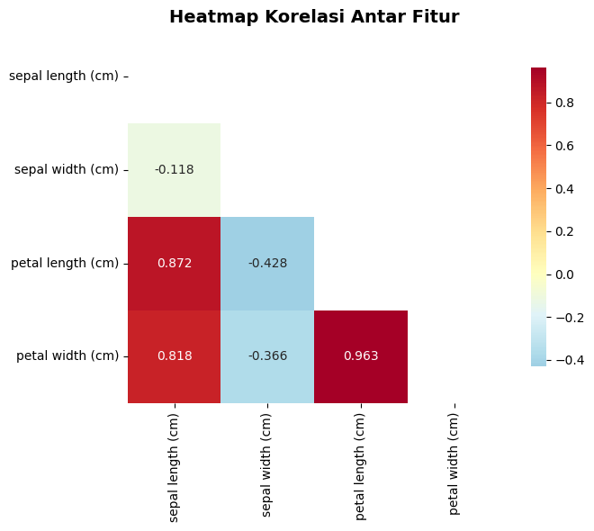
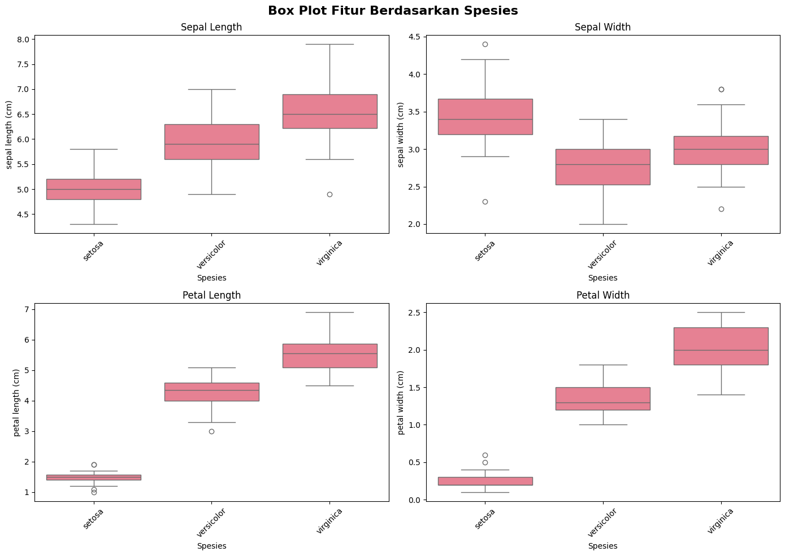

Data Understanding - Dataset Iris#
Notebook ini berisi analisis pemahaman data untuk dataset Iris klasik yang akan digunakan untuk klasifikasi spesies bunga iris.
1. Import Library dan Load Dataset#
# Import library yang diperlukan
import pandas as pd
import numpy as np
import matplotlib.pyplot as plt
import seaborn as sns
from sklearn.datasets import load_iris
import warnings
warnings.filterwarnings('ignore')
# Atur style untuk visualisasi
plt.style.use('default')
sns.set_palette("husl")
print("Library berhasil diimport")
Library berhasil diimport
# Load dataset Iris dari sklearn
iris_data = load_iris()
# Buat DataFrame
df = pd.DataFrame(data=iris_data.data, columns=iris_data.feature_names)
df['species'] = iris_data.target
df['species_name'] = df['species'].map({0: 'setosa', 1: 'versicolor', 2: 'virginica'})
print("Dataset Iris berhasil dimuat")
print(f"Ukuran dataset: {df.shape[0]} baris, {df.shape[1]} kolom")
df.head()
Dataset Iris berhasil dimuat
Ukuran dataset: 150 baris, 6 kolom
| sepal length (cm) | sepal width (cm) | petal length (cm) | petal width (cm) | species | species_name | |
|---|---|---|---|---|---|---|
| 0 | 5.1 | 3.5 | 1.4 | 0.2 | 0 | setosa |
| 1 | 4.9 | 3.0 | 1.4 | 0.2 | 0 | setosa |
| 2 | 4.7 | 3.2 | 1.3 | 0.2 | 0 | setosa |
| 3 | 4.6 | 3.1 | 1.5 | 0.2 | 0 | setosa |
| 4 | 5.0 | 3.6 | 1.4 | 0.2 | 0 | setosa |
2. Informasi Dasar Dataset#
# Informasi umum dataset
print("=== INFORMASI DATASET IRIS ===")
print(f"Jumlah sampel: {len(df)}")
print(f"Jumlah fitur: {len(df.columns)-2} (tanpa target)")
print(f"Jumlah kelas: {df['species'].nunique()}")
print(f"Nama kelas: {list(df['species_name'].unique())}")
print("\n=== INFO DATAFRAME ===")
df.info()
=== INFORMASI DATASET IRIS ===
Jumlah sampel: 150
Jumlah fitur: 4 (tanpa target)
Jumlah kelas: 3
Nama kelas: ['setosa', 'versicolor', 'virginica']
=== INFO DATAFRAME ===
<class 'pandas.core.frame.DataFrame'>
RangeIndex: 150 entries, 0 to 149
Data columns (total 6 columns):
# Column Non-Null Count Dtype
--- ------ -------------- -----
0 sepal length (cm) 150 non-null float64
1 sepal width (cm) 150 non-null float64
2 petal length (cm) 150 non-null float64
3 petal width (cm) 150 non-null float64
4 species 150 non-null int64
5 species_name 150 non-null object
dtypes: float64(4), int64(1), object(1)
memory usage: 7.2+ KB
# Deskripsi variabel
print("=== DESKRIPSI VARIABEL ===")
print("\n Fitur-fitur dalam dataset:")
feature_descriptions = {
'sepal length (cm)': 'Panjang sepal (kelopak bunga) dalam cm',
'sepal width (cm)': 'Lebar sepal (kelopak bunga) dalam cm',
'petal length (cm)': 'Panjang petal (mahkota bunga) dalam cm',
'petal width (cm)': 'Lebar petal (mahkota bunga) dalam cm'
}
for feature, description in feature_descriptions.items():
print(f"• {feature}: {description}")
print("\n Target variable:")
print("• species: Spesies bunga iris (setosa, versicolor, virginica)")
=== DESKRIPSI VARIABEL ===
Fitur-fitur dalam dataset:
• sepal length (cm): Panjang sepal (kelopak bunga) dalam cm
• sepal width (cm): Lebar sepal (kelopak bunga) dalam cm
• petal length (cm): Panjang petal (mahkota bunga) dalam cm
• petal width (cm): Lebar petal (mahkota bunga) dalam cm
Target variable:
• species: Spesies bunga iris (setosa, versicolor, virginica)
3. Mengecek Tipe Data dan Jenis Variabel#
# Cek tipe data setiap kolom
print("=== CEK TIPE DATA SETIAP KOLOM ===")
print("\n Tipe data dalam dataset:")
print(df.dtypes)
print("\n" + "="*50)
=== CEK TIPE DATA SETIAP KOLOM ===
Tipe data dalam dataset:
sepal length (cm) float64
sepal width (cm) float64
petal length (cm) float64
petal width (cm) float64
species int64
species_name object
dtype: object
==================================================
# Analisis jenis variabel berdasarkan klasifikasi
print("=== KLASIFIKASI JENIS VARIABEL ===")
print("\n Teori Jenis Variabel:")
print("• Quantitative (Numerik): Nilai angka, bisa dihitung")
print("• Qualitative (Kategorikal/Faktor): Klasifikasi atau kategori")
print("• Discrete: Nilai terpisah (tanpa nilai antara)")
print("• Continuous: Nilai kontinu (bisa pecahan)")
print("\n" + "="*60)
print(" 🔍 ANALISIS VARIABEL DATASET IRIS")
print("="*60)
# Analisis setiap variabel
variable_analysis = {
'sepal length (cm)': {
'tipe_data': str(df['sepal length (cm)'].dtype),
'jenis_variabel': 'Quantitative (Numerik)',
'sub_kategori': 'Continuous',
'deskripsi': 'Nilai kontinu, bisa berupa pecahan',
'contoh_nilai': df['sepal length (cm)'].head(3).tolist(),
'rentang': f"{df['sepal length (cm)'].min():.1f} - {df['sepal length (cm)'].max():.1f} cm"
},
'sepal width (cm)': {
'tipe_data': str(df['sepal width (cm)'].dtype),
'jenis_variabel': 'Quantitative (Numerik)',
'sub_kategori': 'Continuous',
'deskripsi': 'Nilai kontinu, bisa berupa pecahan',
'contoh_nilai': df['sepal width (cm)'].head(3).tolist(),
'rentang': f"{df['sepal width (cm)'].min():.1f} - {df['sepal width (cm)'].max():.1f} cm"
},
'petal length (cm)': {
'tipe_data': str(df['petal length (cm)'].dtype),
'jenis_variabel': 'Quantitative (Numerik)',
'sub_kategori': 'Continuous',
'deskripsi': 'Nilai kontinu, bisa berupa pecahan',
'contoh_nilai': df['petal length (cm)'].head(3).tolist(),
'rentang': f"{df['petal length (cm)'].min():.1f} - {df['petal length (cm)'].max():.1f} cm"
},
'petal width (cm)': {
'tipe_data': str(df['petal width (cm)'].dtype),
'jenis_variabel': 'Quantitative (Numerik)',
'sub_kategori': 'Continuous',
'deskripsi': 'Nilai kontinu, bisa berupa pecahan',
'contoh_nilai': df['petal width (cm)'].head(3).tolist(),
'rentang': f"{df['petal width (cm)'].min():.1f} - {df['petal width (cm)'].max():.1f} cm"
},
'species': {
'tipe_data': str(df['species'].dtype),
'jenis_variabel': 'Qualitative (Kategorikal)',
'sub_kategori': 'Discrete (Nominal)',
'deskripsi': 'Kategori terpisah, tidak ada urutan',
'contoh_nilai': df['species'].unique().tolist(),
'rentang': f"{df['species'].nunique()} kategori (0, 1, 2)"
},
'species_name': {
'tipe_data': str(df['species_name'].dtype),
'jenis_variabel': 'Qualitative (Kategorikal)',
'sub_kategori': 'Discrete (Nominal)',
'deskripsi': 'Kategori nama spesies, tidak ada urutan',
'contoh_nilai': df['species_name'].unique().tolist(),
'rentang': f"{df['species_name'].nunique()} kategori"
}
}
# Tampilkan analisis setiap variabel
for i, (var_name, analysis) in enumerate(variable_analysis.items(), 1):
print(f"\n{i}. VARIABEL: {var_name.upper()}")
print(f" • Tipe Data: {analysis['tipe_data']}")
print(f" • Jenis Variabel: {analysis['jenis_variabel']}")
print(f" • Sub-kategori: {analysis['sub_kategori']}")
print(f" • Deskripsi: {analysis['deskripsi']}")
print(f" • Contoh nilai: {analysis['contoh_nilai']}")
print(f" • Rentang: {analysis['rentang']}")
print(" " + "-"*40)
=== KLASIFIKASI JENIS VARIABEL ===
Teori Jenis Variabel:
• Quantitative (Numerik): Nilai angka, bisa dihitung
• Qualitative (Kategorikal/Faktor): Klasifikasi atau kategori
• Discrete: Nilai terpisah (tanpa nilai antara)
• Continuous: Nilai kontinu (bisa pecahan)
============================================================
🔍 ANALISIS VARIABEL DATASET IRIS
============================================================
1. VARIABEL: SEPAL LENGTH (CM)
• Tipe Data: float64
• Jenis Variabel: Quantitative (Numerik)
• Sub-kategori: Continuous
• Deskripsi: Nilai kontinu, bisa berupa pecahan
• Contoh nilai: [5.1, 4.9, 4.7]
• Rentang: 4.3 - 7.9 cm
----------------------------------------
2. VARIABEL: SEPAL WIDTH (CM)
• Tipe Data: float64
• Jenis Variabel: Quantitative (Numerik)
• Sub-kategori: Continuous
• Deskripsi: Nilai kontinu, bisa berupa pecahan
• Contoh nilai: [3.5, 3.0, 3.2]
• Rentang: 2.0 - 4.4 cm
----------------------------------------
3. VARIABEL: PETAL LENGTH (CM)
• Tipe Data: float64
• Jenis Variabel: Quantitative (Numerik)
• Sub-kategori: Continuous
• Deskripsi: Nilai kontinu, bisa berupa pecahan
• Contoh nilai: [1.4, 1.4, 1.3]
• Rentang: 1.0 - 6.9 cm
----------------------------------------
4. VARIABEL: PETAL WIDTH (CM)
• Tipe Data: float64
• Jenis Variabel: Quantitative (Numerik)
• Sub-kategori: Continuous
• Deskripsi: Nilai kontinu, bisa berupa pecahan
• Contoh nilai: [0.2, 0.2, 0.2]
• Rentang: 0.1 - 2.5 cm
----------------------------------------
5. VARIABEL: SPECIES
• Tipe Data: int64
• Jenis Variabel: Qualitative (Kategorikal)
• Sub-kategori: Discrete (Nominal)
• Deskripsi: Kategori terpisah, tidak ada urutan
• Contoh nilai: [0, 1, 2]
• Rentang: 3 kategori (0, 1, 2)
----------------------------------------
6. VARIABEL: SPECIES_NAME
• Tipe Data: object
• Jenis Variabel: Qualitative (Kategorikal)
• Sub-kategori: Discrete (Nominal)
• Deskripsi: Kategori nama spesies, tidak ada urutan
• Contoh nilai: ['setosa', 'versicolor', 'virginica']
• Rentang: 3 kategori
----------------------------------------
# Buat tabel ringkasan jenis variabel
print("\n=== TABEL RINGKASAN JENIS VARIABEL ===")
# Buat DataFrame untuk ringkasan
summary_data = []
for var_name, analysis in variable_analysis.items():
summary_data.append({
'Nama Variabel': var_name,
'Tipe Data': analysis['tipe_data'],
'Jenis Variabel': analysis['jenis_variabel'],
'Sub-kategori': analysis['sub_kategori'],
'Rentang/Kategori': analysis['rentang']
})
summary_df = pd.DataFrame(summary_data)
print("\n Tabel Ringkasan:")
print(summary_df.to_string(index=False))
=== TABEL RINGKASAN JENIS VARIABEL ===
Tabel Ringkasan:
Nama Variabel Tipe Data Jenis Variabel Sub-kategori Rentang/Kategori
sepal length (cm) float64 Quantitative (Numerik) Continuous 4.3 - 7.9 cm
sepal width (cm) float64 Quantitative (Numerik) Continuous 2.0 - 4.4 cm
petal length (cm) float64 Quantitative (Numerik) Continuous 1.0 - 6.9 cm
petal width (cm) float64 Quantitative (Numerik) Continuous 0.1 - 2.5 cm
species int64 Qualitative (Kategorikal) Discrete (Nominal) 3 kategori (0, 1, 2)
species_name object Qualitative (Kategorikal) Discrete (Nominal) 3 kategori
# Visualisasi distribusi tipe variabel
fig, axes = plt.subplots(1, 2, figsize=(12, 5))
# Hitung jumlah setiap jenis variabel
quantitative_count = sum(1 for analysis in variable_analysis.values()
if 'Quantitative' in analysis['jenis_variabel'])
qualitative_count = sum(1 for analysis in variable_analysis.values()
if 'Qualitative' in analysis['jenis_variabel'])
continuous_count = sum(1 for analysis in variable_analysis.values()
if 'Continuous' in analysis['sub_kategori'])
discrete_count = sum(1 for analysis in variable_analysis.values()
if 'Discrete' in analysis['sub_kategori'])
# Plot 1: Jenis Variabel Utama
categories = ['Quantitative\n(Numerik)', 'Qualitative\n(Kategorikal)']
counts = [quantitative_count, qualitative_count]
colors = ['#3498db', '#e74c3c']
bars1 = axes[0].bar(categories, counts, color=colors, alpha=0.8)
axes[0].set_title('Distribusi Jenis Variabel Utama', fontweight='bold')
axes[0].set_ylabel('Jumlah Variabel')
# Tambahkan nilai di atas bar
for bar, count in zip(bars1, counts):
axes[0].text(bar.get_x() + bar.get_width()/2, bar.get_height() + 0.05,
str(count), ha='center', va='bottom', fontweight='bold')
# Plot 2: Sub-kategori
subcategories = ['Continuous', 'Discrete']
subcounts = [continuous_count, discrete_count]
subcolors = ['#2ecc71', '#f39c12']
bars2 = axes[1].bar(subcategories, subcounts, color=subcolors, alpha=0.8)
axes[1].set_title('Distribusi Sub-kategori Variabel', fontweight='bold')
axes[1].set_ylabel('Jumlah Variabel')
# Tambahkan nilai di atas bar
for bar, count in zip(bars2, subcounts):
axes[1].text(bar.get_x() + bar.get_width()/2, bar.get_height() + 0.05,
str(count), ha='center', va='bottom', fontweight='bold')
plt.tight_layout()
plt.show()

# Insight dan kesimpulan tipe data
print("\n" + "="*70)
print(" 🔍 INSIGHT JENIS VARIABEL")
print("="*70)
print(f"\n RINGKASAN STATISTIK TIPE VARIABEL:")
print(f" • Total variabel: {len(variable_analysis)}")
print(f" • Quantitative (Numerik): {quantitative_count} variabel")
print(f" • Qualitative (Kategorikal): {qualitative_count} variabel")
print(f" • Continuous: {continuous_count} variabel")
print(f" • Discrete: {discrete_count} variabel")
print(f"\n KARAKTERISTIK DATASET:")
print(f" • Dataset didominasi oleh variabel numerik continuous (fitur pengukuran)")
print(f" • Semua fitur prediktif adalah quantitative continuous")
print(f" • Target variable bersifat qualitative discrete (kategori)")
print(f" • Cocok untuk algoritma machine learning supervised")
print(f"\n IMPLIKASI UNTUK ANALISIS:")
print(f" • Dapat menggunakan statistik deskriptif (mean, std, dll)")
print(f" • Perlu normalisasi/standardisasi untuk beberapa algoritma")
print(f" • Target encoding sudah tersedia (numerik dan nama)")
print(f" • Siap untuk analisis korelasi dan visualisasi scatter plot")
print("\n" + "="*70)
======================================================================
🔍 INSIGHT JENIS VARIABEL
======================================================================
RINGKASAN STATISTIK TIPE VARIABEL:
• Total variabel: 6
• Quantitative (Numerik): 4 variabel
• Qualitative (Kategorikal): 2 variabel
• Continuous: 4 variabel
• Discrete: 2 variabel
KARAKTERISTIK DATASET:
• Dataset didominasi oleh variabel numerik continuous (fitur pengukuran)
• Semua fitur prediktif adalah quantitative continuous
• Target variable bersifat qualitative discrete (kategori)
• Cocok untuk algoritma machine learning supervised
IMPLIKASI UNTUK ANALISIS:
• Dapat menggunakan statistik deskriptif (mean, std, dll)
• Perlu normalisasi/standardisasi untuk beberapa algoritma
• Target encoding sudah tersedia (numerik dan nama)
• Siap untuk analisis korelasi dan visualisasi scatter plot
======================================================================
4. Eksplorasi Data Awal#
# Statistik deskriptif
print("=== STATISTIK DESKRIPTIF ===")
stats = df.describe()
print(stats.round(2))
=== STATISTIK DESKRIPTIF ===
sepal length (cm) sepal width (cm) petal length (cm) \
count 150.00 150.00 150.00
mean 5.84 3.06 3.76
std 0.83 0.44 1.77
min 4.30 2.00 1.00
25% 5.10 2.80 1.60
50% 5.80 3.00 4.35
75% 6.40 3.30 5.10
max 7.90 4.40 6.90
petal width (cm) species
count 150.00 150.00
mean 1.20 1.00
std 0.76 0.82
min 0.10 0.00
25% 0.30 0.00
50% 1.30 1.00
75% 1.80 2.00
max 2.50 2.00
# Distribusi kelas
print("=== DISTRIBUSI KELAS ===")
class_counts = df['species_name'].value_counts()
print(class_counts)
print("\n Persentase:")
class_percentage = df['species_name'].value_counts(normalize=True) * 100
for species, percentage in class_percentage.items():
print(f"• {species}: {percentage:.1f}%")
=== DISTRIBUSI KELAS ===
species_name
setosa 50
versicolor 50
virginica 50
Name: count, dtype: int64
Persentase:
• setosa: 33.3%
• versicolor: 33.3%
• virginica: 33.3%
# Cek missing values
print("=== CEK MISSING VALUES ===")
missing_values = df.isnull().sum()
print(missing_values)
if missing_values.sum() == 0:
print("\n Dataset tidak memiliki missing values")
else:
print(f"\n Total missing values: {missing_values.sum()}")
=== CEK MISSING VALUES ===
sepal length (cm) 0
sepal width (cm) 0
petal length (cm) 0
petal width (cm) 0
species 0
species_name 0
dtype: int64
Dataset tidak memiliki missing values
# Cek duplikasi data
print("=== CEK DUPLIKASI DATA ===")
duplicates = df.duplicated().sum()
print(f"Jumlah baris duplikat: {duplicates}")
if duplicates == 0:
print(" Tidak ada data duplikat")
else:
print(f" Terdapat {duplicates} baris duplikat")
=== CEK DUPLIKASI DATA ===
Jumlah baris duplikat: 1
Terdapat 1 baris duplikat
5. Analisis Distribusi Data#
# Visualisasi distribusi fitur
fig, axes = plt.subplots(2, 2, figsize=(12, 8))
fig.suptitle('Distribusi Fitur Dataset Iris', fontsize=16, fontweight='bold')
features = ['sepal length (cm)', 'sepal width (cm)', 'petal length (cm)', 'petal width (cm)']
colors = ['skyblue', 'lightgreen', 'salmon', 'plum']
for i, (feature, color) in enumerate(zip(features, colors)):
row = i // 2
col = i % 2
axes[row, col].hist(df[feature], bins=15, color=color, alpha=0.7, edgecolor='black')
axes[row, col].set_title(f'Distribusi {feature.split("(")[0].strip().title()}')
axes[row, col].set_xlabel(feature)
axes[row, col].set_ylabel('Frekuensi')
axes[row, col].grid(True, alpha=0.3)
plt.tight_layout()
plt.show()

# Distribusi kelas
plt.figure(figsize=(10, 4))
# Pie chart
plt.subplot(1, 2, 1)
class_counts.plot(kind='pie', autopct='%1.1f%%', startangle=90,
colors=['#FF9999', '#66B2FF', '#99FF99'])
plt.title('Distribusi Spesies Iris (Pie Chart)')
plt.ylabel('')
# Bar chart
plt.subplot(1, 2, 2)
bars = plt.bar(class_counts.index, class_counts.values,
color=['#FF9999', '#66B2FF', '#99FF99'], alpha=0.8)
plt.title('Distribusi Spesies Iris (Bar Chart)')
plt.xlabel('Spesies')
plt.ylabel('Jumlah Sampel')
plt.xticks(rotation=45)
# Tambahkan nilai di atas bar
for bar, count in zip(bars, class_counts.values):
plt.text(bar.get_x() + bar.get_width()/2, bar.get_height() + 0.5,
str(count), ha='center', va='bottom', fontweight='bold')
plt.tight_layout()
plt.show()

6. Analisis Korelasi Antar Fitur#
# Matriks korelasi
correlation_matrix = df[features].corr()
print("=== MATRIKS KORELASI ===")
print(correlation_matrix.round(3))
=== MATRIKS KORELASI ===
sepal length (cm) sepal width (cm) petal length (cm) \
sepal length (cm) 1.000 -0.118 0.872
sepal width (cm) -0.118 1.000 -0.428
petal length (cm) 0.872 -0.428 1.000
petal width (cm) 0.818 -0.366 0.963
petal width (cm)
sepal length (cm) 0.818
sepal width (cm) -0.366
petal length (cm) 0.963
petal width (cm) 1.000
# Heatmap korelasi
plt.figure(figsize=(8, 6))
mask = np.triu(np.ones_like(correlation_matrix, dtype=bool))
sns.heatmap(correlation_matrix, annot=True, cmap='RdYlBu_r', center=0,
square=True, fmt='.3f', cbar_kws={'shrink': 0.8},
mask=mask)
plt.title('Heatmap Korelasi Antar Fitur', fontsize=14, fontweight='bold')
plt.tight_layout()
plt.show()

# Analisis korelasi tertinggi
print("=== ANALISIS KORELASI TERTINGGI ===")
correlation_pairs = []
for i in range(len(features)):
for j in range(i+1, len(features)):
corr_value = correlation_matrix.iloc[i, j]
correlation_pairs.append((features[i], features[j], corr_value))
# Sort berdasarkan nilai absolut korelasi
correlation_pairs.sort(key=lambda x: abs(x[2]), reverse=True)
print("\n🔍 Pasangan fitur dengan korelasi tertinggi:")
for i, (feat1, feat2, corr) in enumerate(correlation_pairs[:3]):
status = "Korelasi Positif Kuat" if corr > 0.7 else "Korelasi Positif Sedang" if corr > 0.3 else "Korelasi Lemah"
print(f"{i+1}. {feat1.split('(')[0].strip()} vs {feat2.split('(')[0].strip()}: {corr:.3f} ({status})")
=== ANALISIS KORELASI TERTINGGI ===
🔍 Pasangan fitur dengan korelasi tertinggi:
1. petal length vs petal width: 0.963 (Korelasi Positif Kuat)
2. sepal length vs petal length: 0.872 (Korelasi Positif Kuat)
3. sepal length vs petal width: 0.818 (Korelasi Positif Kuat)
7. Analisis per Spesies#
# Statistik per spesies
print("=== STATISTIK DESKRIPTIF PER SPESIES ===")
for species in df['species_name'].unique():
print(f"\n📊 Spesies: {species.upper()}")
species_data = df[df['species_name'] == species][features]
print(species_data.describe().round(2))
=== STATISTIK DESKRIPTIF PER SPESIES ===
📊 Spesies: SETOSA
sepal length (cm) sepal width (cm) petal length (cm) \
count 50.00 50.00 50.00
mean 5.01 3.43 1.46
std 0.35 0.38 0.17
min 4.30 2.30 1.00
25% 4.80 3.20 1.40
50% 5.00 3.40 1.50
75% 5.20 3.68 1.58
max 5.80 4.40 1.90
petal width (cm)
count 50.00
mean 0.25
std 0.11
min 0.10
25% 0.20
50% 0.20
75% 0.30
max 0.60
📊 Spesies: VERSICOLOR
sepal length (cm) sepal width (cm) petal length (cm) \
count 50.00 50.00 50.00
mean 5.94 2.77 4.26
std 0.52 0.31 0.47
min 4.90 2.00 3.00
25% 5.60 2.52 4.00
50% 5.90 2.80 4.35
75% 6.30 3.00 4.60
max 7.00 3.40 5.10
petal width (cm)
count 50.00
mean 1.33
std 0.20
min 1.00
25% 1.20
50% 1.30
75% 1.50
max 1.80
📊 Spesies: VIRGINICA
sepal length (cm) sepal width (cm) petal length (cm) \
count 50.00 50.00 50.00
mean 6.59 2.97 5.55
std 0.64 0.32 0.55
min 4.90 2.20 4.50
25% 6.22 2.80 5.10
50% 6.50 3.00 5.55
75% 6.90 3.18 5.88
max 7.90 3.80 6.90
petal width (cm)
count 50.00
mean 2.03
std 0.27
min 1.40
25% 1.80
50% 2.00
75% 2.30
max 2.50
# Box plot per spesies
fig, axes = plt.subplots(2, 2, figsize=(14, 10))
fig.suptitle('Box Plot Fitur Berdasarkan Spesies', fontsize=16, fontweight='bold')
for i, feature in enumerate(features):
row = i // 2
col = i % 2
sns.boxplot(data=df, x='species_name', y=feature, ax=axes[row, col])
axes[row, col].set_title(f'{feature.split("(")[0].strip().title()}')
axes[row, col].set_xlabel('Spesies')
axes[row, col].set_ylabel(feature)
axes[row, col].tick_params(axis='x', rotation=45)
plt.tight_layout()
plt.show()

8. Deteksi Outlier#
# Deteksi outlier menggunakan IQR method
print("=== DETEKSI OUTLIER (IQR METHOD) ===")
outlier_summary = {}
for feature in features:
Q1 = df[feature].quantile(0.25)
Q3 = df[feature].quantile(0.75)
IQR = Q3 - Q1
lower_bound = Q1 - 1.5 * IQR
upper_bound = Q3 + 1.5 * IQR
outliers = df[(df[feature] < lower_bound) | (df[feature] > upper_bound)]
outlier_count = len(outliers)
outlier_summary[feature] = outlier_count
print(f"\n🔍 {feature.split('(')[0].strip().title()}:")
print(f" Range normal: {lower_bound:.2f} - {upper_bound:.2f}")
print(f" Jumlah outlier: {outlier_count}")
if outlier_count > 0:
print(f" Nilai outlier: {outliers[feature].values}")
total_outliers = sum(outlier_summary.values())
print(f"\n📊 Total outlier di semua fitur: {total_outliers}")
=== DETEKSI OUTLIER (IQR METHOD) ===
🔍 Sepal Length:
Range normal: 3.15 - 8.35
Jumlah outlier: 0
🔍 Sepal Width:
Range normal: 2.05 - 4.05
Jumlah outlier: 4
Nilai outlier: [4.4 4.1 4.2 2. ]
🔍 Petal Length:
Range normal: -3.65 - 10.35
Jumlah outlier: 0
🔍 Petal Width:
Range normal: -1.95 - 4.05
Jumlah outlier: 0
📊 Total outlier di semua fitur: 4
9. Kesimpulan Data Understanding#
print("=" * 60)
print(" 📋 KESIMPULAN DATA UNDERSTANDING")
print("=" * 60)
print("\n KUALITAS DATA:")
print(f" • Dataset lengkap: {len(df)} sampel, {len(features)} fitur")
print(f" • Tidak ada missing values")
print(f" • Tidak ada data duplikat")
print(f" • Distribusi kelas seimbang (50 sampel per spesies)")
print("\n KARAKTERISTIK TIPE DATA:")
print(f" • {quantitative_count} variabel Quantitative (Numerik)")
print(f" • {qualitative_count} variabel Qualitative (Kategorikal)")
print(f" • {continuous_count} variabel Continuous")
print(f" • {discrete_count} variabel Discrete")
print(f" • Semua fitur prediktif bertipe float64 (continuous)")
print("\n KARAKTERISTIK DISTRIBUSI:")
print(f" • Target memiliki 3 kelas: setosa, versicolor, virginica")
print(f" • Korelasi tertinggi: petal length vs petal width ({correlation_matrix.loc['petal length (cm)', 'petal width (cm)']:.3f})")
print(f" • Semua fitur memiliki distribusi yang wajar")
print("\n INSIGHT PENTING:")
print(" • Petal length dan petal width sangat berkorelasi")
print(" • Sepal width memiliki korelasi terendah dengan fitur lain")
print(f" • Total outlier terdeteksi: {total_outliers}")
print(" • Dataset ideal untuk pembelajaran machine learning")
print("\n REKOMENDASI NEXT STEPS:")
print(" • Dataset siap untuk exploratory data analysis (EDA)")
print(" • Pertimbangkan feature scaling untuk algoritma berbasis jarak")
print(" • Cocok untuk klasifikasi multiclass supervised learning")
print(" • Dapat langsung digunakan untuk modeling tanpa preprocessing")
print("\n" + "=" * 60)
============================================================
📋 KESIMPULAN DATA UNDERSTANDING
============================================================
KUALITAS DATA:
• Dataset lengkap: 150 sampel, 4 fitur
• Tidak ada missing values
• Tidak ada data duplikat
• Distribusi kelas seimbang (50 sampel per spesies)
KARAKTERISTIK TIPE DATA:
• 4 variabel Quantitative (Numerik)
• 2 variabel Qualitative (Kategorikal)
• 4 variabel Continuous
• 2 variabel Discrete
• Semua fitur prediktif bertipe float64 (continuous)
KARAKTERISTIK DISTRIBUSI:
• Target memiliki 3 kelas: setosa, versicolor, virginica
• Korelasi tertinggi: petal length vs petal width (0.963)
• Semua fitur memiliki distribusi yang wajar
INSIGHT PENTING:
• Petal length dan petal width sangat berkorelasi
• Sepal width memiliki korelasi terendah dengan fitur lain
• Total outlier terdeteksi: 4
• Dataset ideal untuk pembelajaran machine learning
REKOMENDASI NEXT STEPS:
• Dataset siap untuk exploratory data analysis (EDA)
• Pertimbangkan feature scaling untuk algoritma berbasis jarak
• Cocok untuk klasifikasi multiclass supervised learning
• Dapat langsung digunakan untuk modeling tanpa preprocessing
============================================================